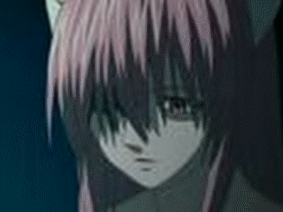

Forums galactiques > Taverne galactique : lieu de discussion informel > Le p'tit bar du coin
Pages : 1 2 ... 9 10 11 ... 23 24
| Krynn Réputation à la taverne : 47  03/08 ETU 13:11 | Score : 0 Détails BONJOUUUUUUUUUR
La porte du bar s'était ouvert à la volée, provoquant un pivotage de tête général des personnes présentes en direction de Jade. Oups... Avec un sourire plus grand et lumineux que jamais, autant pour la satisfaction d'avoir réussi a attirer l'attention de tout le monde que pour la joie d'être enfin de retour chez elle apres un voyage riche en émotion, Jade salua tout le monde, rayonnante ! Alors, tout s'est bien passé ici ?? Pas trop de bétises j'espère ! | ||
| Lucy Réputation à la taverne : 12  03/08 ETU 14:19 | Score : 0 Détails - Bonjours, j'espere que votre voyage c'est bien passé! Bienvenue chez vous Jade!
Et Nyû se rassie contente de revoire la jeune femme. | ||
| Ren56 Réputation à la taverne : 92  03/08 ETU 18:26 | Score : 0 Détails Un whiskey HA par ici svp.
| ||
| Luna Réputation à la taverne : 38  03/08 ETU 19:41 | Score : 0 Détails Une jeune femme entra dans le bar, avec un magnifique loup noir. Ce bar était sympa, il lui plaisait bien. Elle s'assit a une table parlant a quelqu'un qu'on ne voyait pas.
- Bonjour un Whisky et du lait s'il vou plait! | ||
| Krynn Réputation à la taverne : 47 03/08 ETU 22:03 | Score : 0 Détails Tout de suite !
Jade partit chercher la commande. Entre temps, son attention fut attirée par un homme dont le regard vagabondait dans le vide. Elle ne l'avait pas vu en entrant quelques heures plus tôt. Elle avait pensé qu'il avait eu autre chose à faire. Mais peut-être était-il arrivé entre temps. Non, il serait venu au comptoir... peut-être. Saegmund était étrangement calme comparé à quelques jours plus tôt. Quelques jours plus tôt... Avait-il remarqué ses clin d'oeil discret lors de son départ. Peut-être pas. Certainement pas... En tout cas, il l'avait probablement pris pour un encouragement pour les jours à venir. Arrête de te prendre la tête comme ça et va t'occuper de la commande. Dans son esprit, la voix de Krynn l'avait fait revenir à la réalité. Elle irait voir Saegmund plus tard, lorsqu'il sera revenu à lui. Voilà votre boisson ! Il me semble ne jamais vous avoir apperçu par ici. En tout cas, vous êtes la bienvenue ! Qu'est-ce qui vous amène dans le coin ? Ops, que je suis bête, je ne me suis même pas présentée : je me nomme Jade ! | ||
| Corbeau noir Réputation à la taverne : 1010  03/08 ETU 22:07  | Score : 0 Détails Corbeau avait soif d'avoir dut traiter avec les contrebandiers.
Tout cela avait bien faillit finir dans un bain de sang et il voulait bien prendre un peu de repos. Pas parce qu'on était Antéchrist qu'on avait pas des besoins humains! Il s'approchat du comptoir avec son habituelle cape noire et sans regarder les clients alentour, il dit é la jeune femme présente : "Servez moi ce que vous voulez... Et rapidement je vous prie trés chère..." | ||
| Krynn Réputation à la taverne : 47 03/08 ETU 22:12 | Score : 0 Détails Ce que je veux ?
Puisque vous le proposez, il parait que je réussi particulièrement certain cocktail... Je reviens dans quelqus instants En effet, quelques instants plus tard, Jade était de retour avec un grand verre dont la couleur allait du jaune au rouge dans un beau dégradé. Elle ajouta deux glaçons et le tendit à l'homme Vous m'en direz des nouvelles! | ||
| Luna Réputation à la taverne : 38 03/08 ETU 22:37 | Score : 0 Détails Luna bu une gorgée de Whisky et tendi le verre de lait à Storm qui la remercia de sa voix grave.
- Merci Jade, mon nom est Luna et je vous présente Storm Au grand étonnement de Jade le loup répondit: - Bonjour -J'espere d'ailleur que sa présence ne vous dérange pas... Je suis une nouvelle commandante, je viens d'arrivée dans la galaxie. J'ai trouvé ce bar charmant alors on ai venu se rafraichire. | ||
| Corbeau noir Réputation à la taverne : 1010 03/08 ETU 22:41 | Score : 0 Détails Corbeau regardat d'un oeil morne le mélange multicolore et l'avalat d'une traite.
Il ne sentit pas le gout mais l'alcool lui réchauffat les membres et il s'étirat avant de dire : "Maintenant, je vais trinquer pour kurt! Alors ce que vous avez de plus fort! Et puis des filles aussi! Et à manger! Et un émetteur radio! Et..." Corbeau s'arrétat pour se rendre compte qu'il était un peu bourré... La journée avait été longue. Il reposat son verre et dit alors : "Je vais partir en fin de compte... Sur ce..." Il entendit alors une voix s'élever du loup. il s'rrétat net et se retournat pour s'en approcher et dire : "Mais vous parlez bien dites moi! Ou avez vous appris? Vous mangez quoi? Quel sont les effets de l'alcool sur vous?" | ||
| Luna Réputation à la taverne : 38 03/08 ETU 23:00 | Score : 0 Détails Storm éclatat de rire.
- Bonjour mon brave! Je parle naturellement c'est une caractéristiquede ma famille. Je mange de la viande fraiche bien saignante et ne bois pas d'alcool...j'ai assez de m'occuper de ma maitresse... - Storm tu n'a pas honte! Et Luna, Storm et Corbeau noir éclatèrent tous trois de rire. Puis Luna et Storm se retirèrent. | ||
| Mathilda Hanna Réputation à la taverne : 1228  04/08 ETU 12:56 | Score : 2 Détails Le pauvre Saegmund était toujours assis au fond de la salle, partagé entre joie et inquiétude...
La joie était toute facile à comprendre : mademoiselle Jade était enfin revenue et se trouvait à quelques pas de lui ! Quant à l'inquiétude, éh bien... comme toujours, il ne savait pas comment aborder les femmes, surtout lorsqu'elles étaient jolies ! " Arf, oui... sûr que ses clins d'oeil étaient des indices ! Et ses petits sourires en coin... aussi? Comment lui déclarer ce que je ressens?... Ah, non, pas ça ! J'aurai encore l'air ridicule ! Comme toujours..." Saegmund en était là, ayant follement envie de se lever et de prendre Jade dans ses bras, de l'étreindre, mais en même temps il avait peur de sa réaction et surtout qu'elle ne se refuse à ce geste de joie de sa part ! Aussi réfléchissait-il à ce qu'il convenait de faire... "Hum... m'enverra-t-elle paître? couroisement, sans ménagement? C'est que j'ai peur de souffrir... Et puis après tout, je suis plus proche du cadavre que de l'Apollon, à mon âge ! Comment pourrait-elle s'intéresser à quelqu'un comme moi? Je dois être bien fou d'espérer... Mais... oh, elle si charmante ainsi... et si rayonnante ! C'en est presque intenable... Que dois-je faire ? que pourrais-je bien dire pour obtenir ses faveurs ?" Se grattant la tête, il commençait à envisager les différentes possibilités d'approche... "Hum... quelques vers? un poême? cela pourrait peut-être la toucher? S'il vous plait pour jamais, un plaisir pratiquer Aimez-moi, nous prendrons les plaisirs de la vie, Pendus l'un l'autre au col, et jamais nulle envie D'aimer en autre lieu ne pourra nous mener. Hum, non ! J'aurais l'air d'un fou... à tous les coups elle me gifllerait ! Plus direct alors? avec un... euh... "Salut poupée !"? Aïe... pas trop bon, ça ! Et si je tentais tout de suite un doux baiser? Outch, mon Dieu ! Avec les lait fraise/cognac que j'ai bu, je ne dois pas avoir l'haleine très fraîche!" Saegmund commençait à rougir, confus, ne trouvant pas la manière dont il aborderait Jade... Mais surtout, il se disait que rester ainsi plus longtemps à l'écart serait fort malpoli ! Aussi se leva-t-il et se dirigea-t-il vers Jade qui lui tournait le dos, affairée avec des clients... " Bon, et maintenant je fais quoi?... euh, cavalier, peut-être?... Hum, c'est trop tentant! Arf... je le fais, je le fais pas?... Tout de même, ce serait inconvenant... et risqué sans doute ! Oui, mais n'est-ce pas comme ça que font les jeunes d'aujourd'hui? C'est une coutume chez eux, non?" Prenant son courage à deux mains, soupirant profondément, il s'approcha de Jade par derrière et, posant une main sur l'hanche de la demoiselle, il lui dit simplement : "Bonjour, vous !" avant de fermer les yeux et, le visage tendu et crispé, de faire glisser sa main un peu plus bas... | ||
| Luna Réputation à la taverne : 38 04/08 ETU 15:04 | Score : 0 Détails Apres avoir réglé quelque détails Luna et Storm retournèrent au "p'tit bar du coin", décidemment ils aiment bien cet endroit. Et les gens qui y venait. Quand ils entrèrent un homme se tenaient derrière Jade. Cette scene fit sourire Luna. Il alèrent alors s'assoir à une table, un peu à l'écart, puis après s'être concerté Storm alla au bar.
- Une Vodka et du lait. Est ce que vous pouvez tout apporter à la table : j'aurai du mal... Luna tirait une mine boudeuse et les pauvre tentatives de son ami ne lui rendirent pas le sourire. | ||
| Ren56 Réputation à la taverne : 92 04/08 ETU 16:56 | Score : 0 Détails Entrant dans le bar, Ren jeta un coup d'oeil autour de lui et repéra Seagmund et Jade, ce qui le fait sourire. Il était très heureux pour ces deux-là.
Tournée générale dit-il , tellement euphorique. Prenez ce que vous voulez , c'est moi qui offre. | ||
| Luna Réputation à la taverne : 38 04/08 ETU 17:15 | Score : 0 Détails Storm s'avança vers le nouveau venu :
- Eh bien n'aurait-on pas la un jeune homme jaloux ? Mais ne vous inquiétez pas il y a plein de jolie commandante à Espérance... Oui ne faite pas cette tête je suis un loup et je parle, quoi de plus normal ? Puis il retourna vers sa maitresse qui était toujours aussi triste... | ||
| Ren56 Réputation à la taverne : 92 04/08 ETU 17:20 | Score : 0 Détails Mais de rien, que pourrait-on dire de mal a une si jeune ,si douce et si jolie commandante ? Et ne vous inquiétez pas pour Wolf ou Storm, j'ai l'habitude des animaux qui parle avec Werewolf et Ragnard.
| ||
| Krynn Réputation à la taverne : 47 04/08 ETU 17:21 | Score : 3 Détails En un instant, Jade pivota sous le coup de la surprise, pour se retrouver face à... Saegmund ? Oups...
Hélas, sa main, élancée par réflexe avant de se retourner, avait déjà frappé juste. La joue gauche de l'homme rougissait à vue d'oeil à l'endroit où était la main. Jade ne put échapper un petit rire. La seconde joue de Saegmund prit à son tour un teint rosé. Je.. Je suis désolée. Vous.. heu... Je... Mais qu'est-ce que vous faisiez au juste ? La surprise du départ avait incontestablement fait place à l'amusement. Amusement qui n'était apparemment pas partagé par Saegmund qui avait du mal à prononcer le moindre mot. Après tout, peu importe. Mais vous avez eu ce que vous méritez ! Et encore, ça aurait pu être pire que ça, je vous le garantie ! Un instant de silence. C'est bien parce que c'est vous... D'un grand sourire et d'un geste de la main, elle lui indiqua d'attendre quelques instants. Elle servit tous les demandeurs, et revint avec deux bières vers Saegmund. Clin d'oeil | ||
| Luna Réputation à la taverne : 38 04/08 ETU 17:23 | Score : 0 Détails Luna esquissa un sourir, le premier de la journée.
- Merci Ren et aussi pour vos félicitation... - C'est formidable vous êtes arrivé à fair sourire ma maitresse ! | ||
| Ren56 Réputation à la taverne : 92 04/08 ETU 17:37 | Score : 0 Détails Pourquoi dis tu cela ? Est ce donc un miracle que cette belle Luna sourit ?
| ||
| Luna Réputation à la taverne : 38 04/08 ETU 17:56 | Score : 0 Détails Storm répondit alors en souriant :
- Un miracle ? Oui depuis quelque jour elle à l'air soucieuse... Même à moi elle ne me dis rien et crois moi petit à moi elle me dit tout... normalement! Il regarda Luna avec inquiétude, qu'est-ce qu'elle avait...? | ||
| Ren56 Réputation à la taverne : 92 04/08 ETU 18:00 | Score : 0 Détails Alors qu'as tu donc Luna ? Pour ne rien dire a tes confidents ce que tu as sur le coeur doit etre très important pour toi. Ressens tu quelque chose pour quelqu'un ou doit tu garder un secret ? Qu'y a-t-il Luna ? Dis moi tout, je suis ton confident a jamais.
|
Pages : 1 2 ... 9 10 11 ... 23 24
Forums galactiques > Taverne galactique : lieu de discussion informel > Le p'tit bar du coin